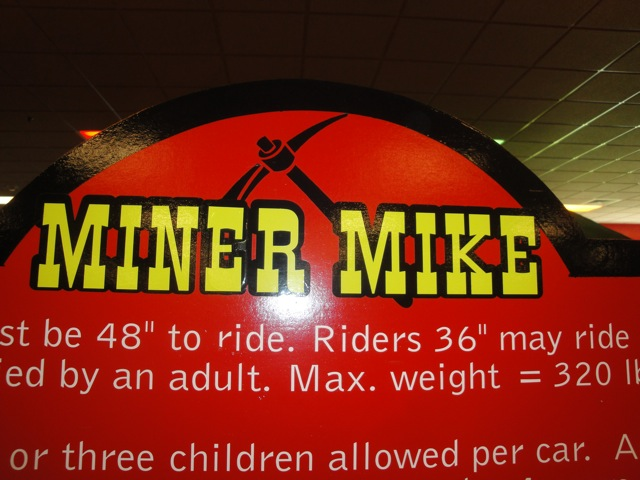

| |
Miner Mike Review
While this ride is now at Niagra Amusement Park, it was at Knuckleheads when I last rode it. Considering we're coaster enthusiasts, the real reason that we were here is to go credit whoring. And the credit here is truely lovely. Miner Mike. A kiddy coaster about 10 ft at the most, yeah. This is some hard core credit whoring. You get in the seats, pull down the lap bar, and we're off. We start off on a lift hill thats probably smaller than us, only to go down a tiny little drop. The drop may be tiny, but we gain a little speed from it. After we go down the drop. Its like a mini launch in a way. Theres a small dip, we gain and lose speed, but not in typical fashion. It almost feels powered. And then theres the spiral at the end of the ride. There are laterals here. And you can tell that you are too big for this ride right here. Ouch. We rise up a ramp, and thats the ride. We get two more laps, and then its over. Yeah. Thats some dirty credit whoring. You should probably take a shower after this ride.
2/10
Opened at Knuckleheads in 2007
Moved to Niagra Amusement Park in 2024
Built by: Wisdom Rides
Last Ridden: August 14, 2010
Miner Mike Photos

Home
|